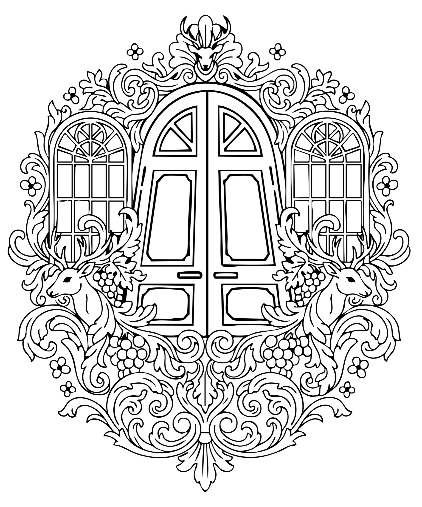
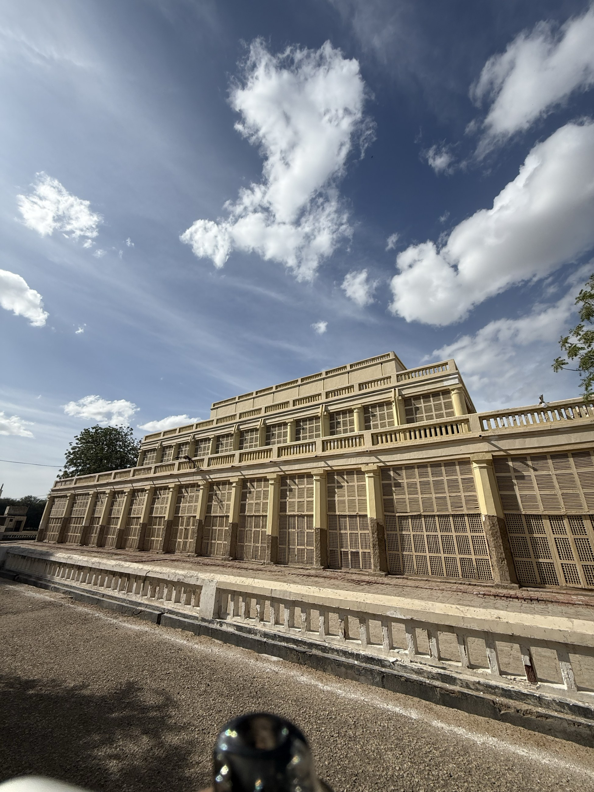
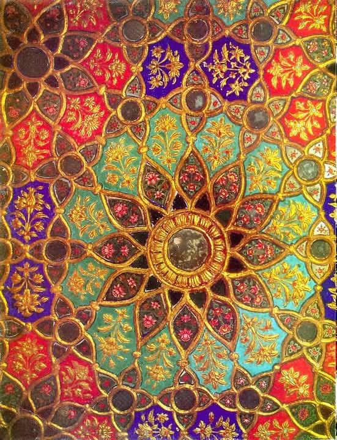
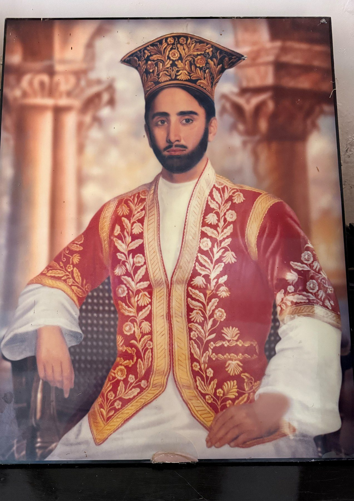
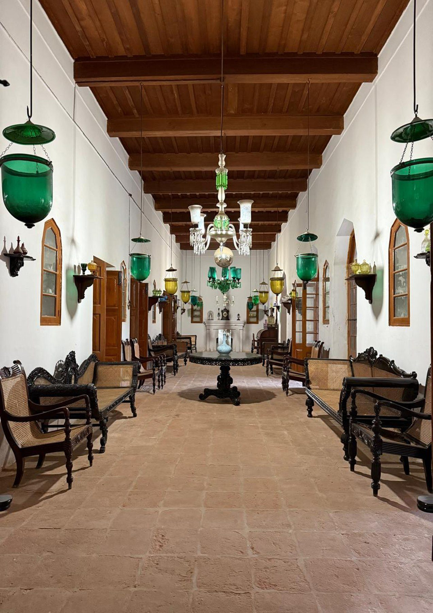
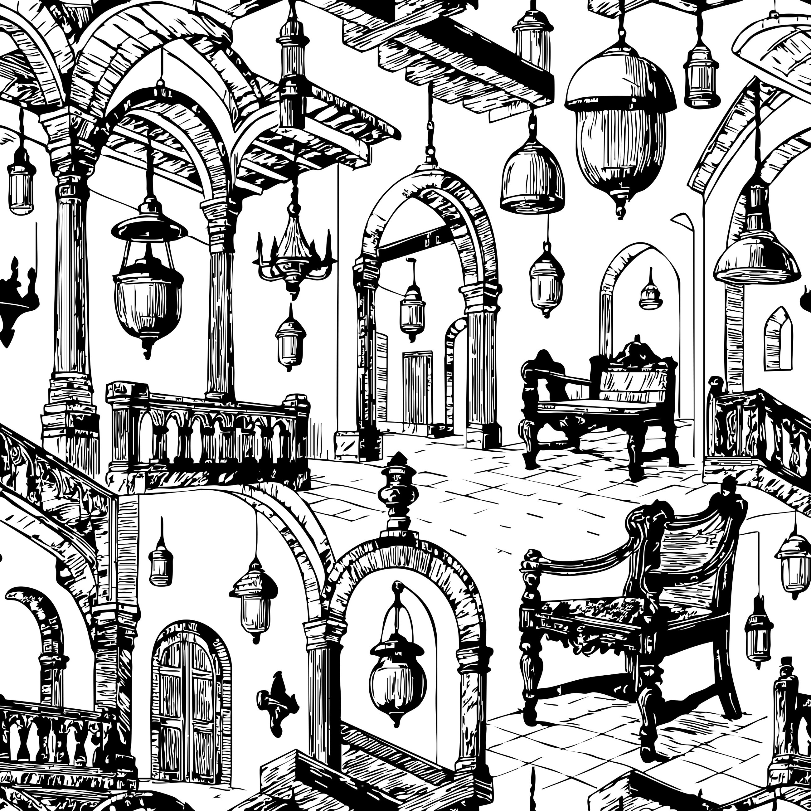
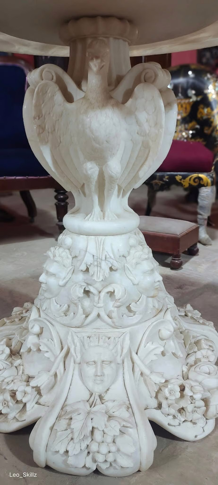
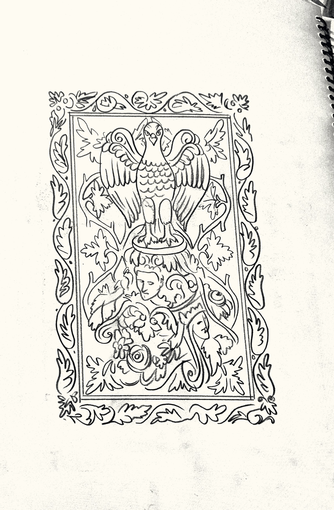
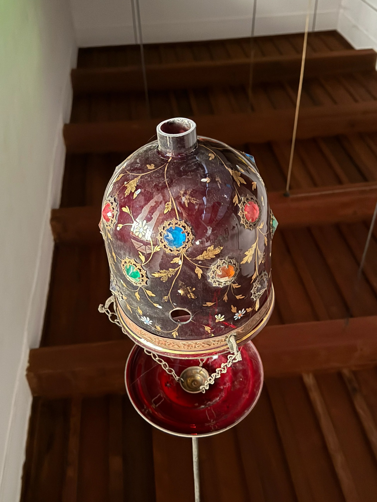
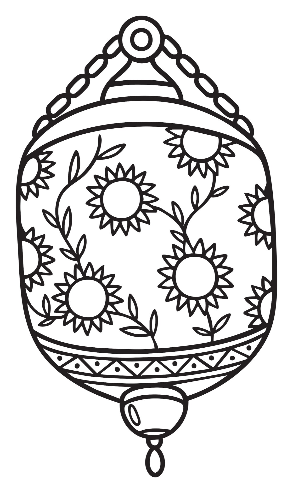

Composition 02 & 03
The Deer & the Doorway
- Source
- Stag trophies over an arched doorway
- Stage reached
- Separations prepared for jacquard weave and screen print
Six architectural compositions from the Talpur Haveli, photographed, hand-drawn and classified like specimens in an archive.
Enter the archiveEvery drawing in this archive started as an hour spent looking at one surface of a single house in Hyderabad, Sindh, before renovation, sale or simple time changed it. Houses like this one get altered or lost across South Asia the way old houses are lost everywhere, and most of what they carry is never drawn down before it goes.
This archive treats six of the haveli's surfaces the way a natural history collection treats a specimen: photographed, redrawn by hand, classified and kept, so the record outlasts the room it came from. Drag the slider on each plate to move between the photograph and the drawing made from it.











Each composition here already exists as a finished pattern elsewhere on this site, on silk, brass and paper. This archive is where the six of them are kept together, with the surfaces they came from, in case that record is useful to someone who studies havelis, or to whoever has this house after me.
See the full case studies